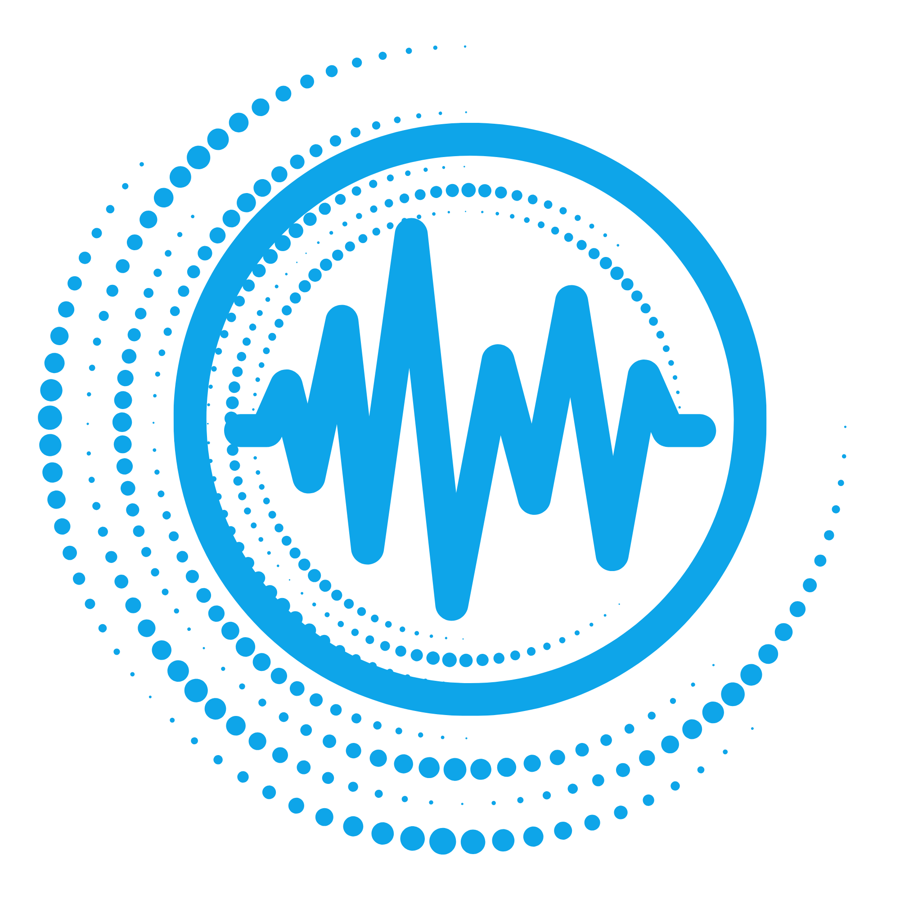

El sistema puede expandirse según el nivel de calibración requerido.
Parece que estás calibrando una conversación con un perfil C-Level. La señal más fuerte en este momento parece ser escepticismo, y el principal bloqueo identificado viene del presupuesto.
Completa los 3 pasos antes de registrar el aprendizaje.